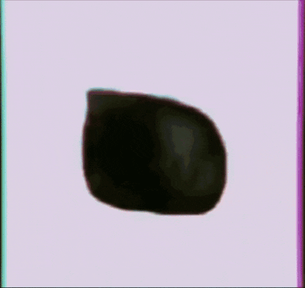

Programy
Počítačový program (též jen program, obecně pak software) je v informatice posloupnost instrukcí (ne nutně strojových instrukcí), která popisuje realizaci dané úlohy počítačem. Aby počítač mohl vykonávat nějakou činnost, potřebuje mít ve své operační paměti alespoň jeden program. V současné době je v počítači základním programem jádro, které řídí jeho chod a uživatel pak pracuje s aplikačním softwarem.
Data
Data jsou v informatice údaje zaznamenané v digitální (číselné) podobě určené k počítačovému zpracování. Data (např. číslo, text, obrázek, zvuk) jsou zapsána (kódována) v podobě posloupností čísel (bajtů) a uložena např. v operační paměti počítače nebo na záznamovém médiu (pevný disk, CD, paměťová karta apod.). Stejným způsobem je v paměti vedle dat uložen i sled instrukcí tvořící počítačový program, který určuje, jak má počítač data zpracovávat.
